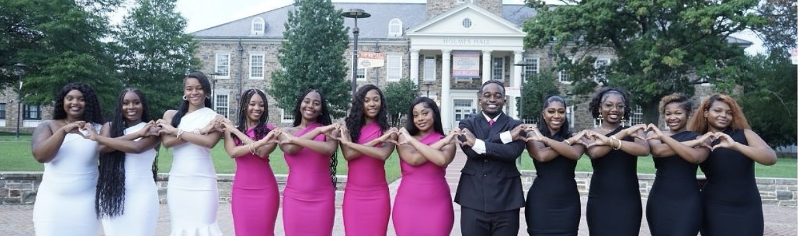

About For College Girls
For College Girls at the University of Miami (FCG UM) is a student-led organization dedicated to helping college women grow with confidence — academically, socially, and professionally — through mentorship, community, and intentional programming.
Why For College Girls Exists
College is often treated as a place where students are expected to already know how to navigate independence, professionalism, and personal growth. For many women, especially those entering college for the first time, that knowledge is assumed — not taught.
For College Girls was created to bridge that gap. The organization focuses on guiding women through the “unspoken” parts of college life — from professional etiquette and networking to confidence-building and wellness — all within a supportive, sister-centered community.
Our Story
For College Girls was originally founded by Kendra Pinder on August 5, 2022, at Morgan State University. Inspired by the impact of the organization and recognizing a similar need at the University of Miami, FCG UM was established to bring that same support system to UM students.
As the charter founder and president of FCG UM, the chapter was built by intentionally gathering women who could serve as mentors, leaders, and “big sisters” — creating a space rooted in guidance, service, and genuine connection.
